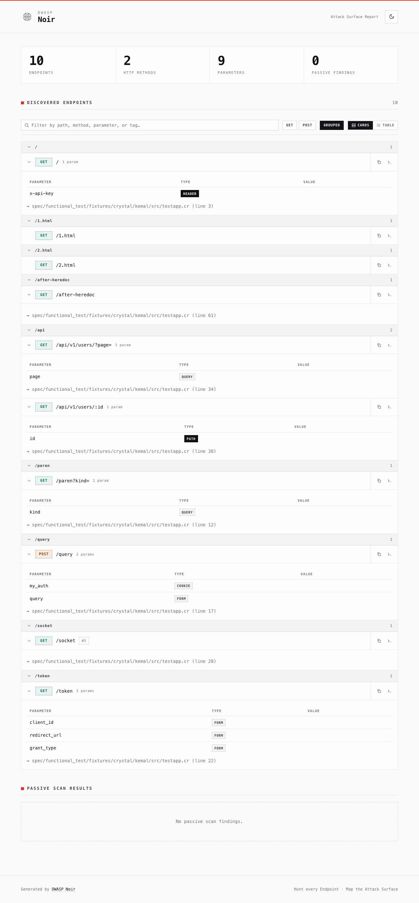
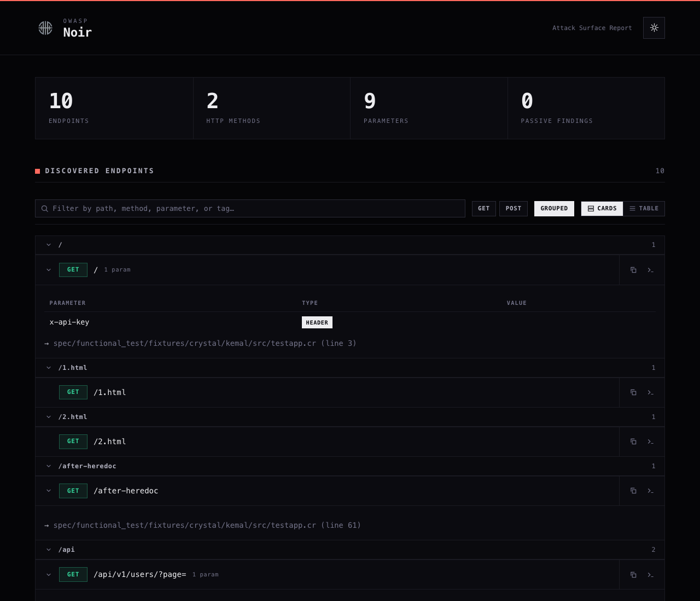
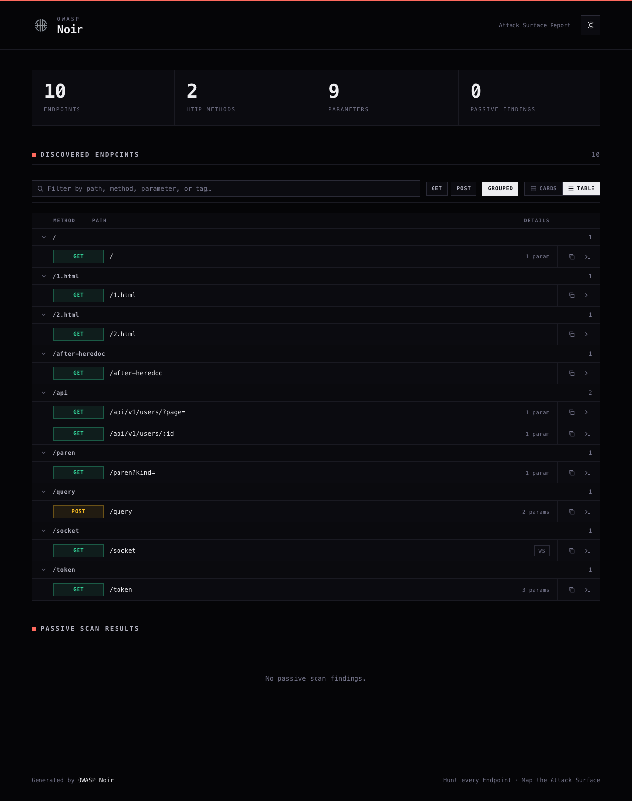

HTML 리포트
공격 표면 스캔 결과에 대한 시각적인 HTML 보고서를 생성합니다.
스캔 결과를 시각화한 단독 실행 가능한 인터랙티브 HTML 파일을 생성합니다. 시맨틱 컬러를 더한 다크테크 "noir" 테마를 사용합니다. 크롬(UI 틀)은 무채색과 모노 타이포로 유지하고, 색은 의미가 있는 곳에만 절제해서 사용해 HTTP 메서드와 발견 항목의 심각도가 한눈에 들어옵니다. 외부 의존성 없는 단일 파일이라 오프라인에서도 그대로 열리고, 이해관계자와 공유하거나 공격 표면을 리뷰할 때 유용합니다.
기본 사용법
noir scan . -f html -o report.html
미리보기
아래 스크린샷은 Noir에 포함된 Kemal 테스트 픽스처로 생성한 실제 리포트이며, 저장소를 받아 그대로 재현할 수 있습니다.
noir scan -b spec/functional_test/fixtures/crystal/kemal -f html -o report.html

리포트에는 다크 테마가 내장되어 있습니다. 우측 상단의 컨트롤로 전환할 수 있으며, 선택한 테마는 localStorage에 저장되어 다음에 열 때도 유지됩니다. 처음 열 때는 운영체제의 prefers-color-scheme 설정을 따릅니다.

대규모 스캔에는 Cards / Table 컨트롤로 컴팩트 테이블 뷰를 사용할 수 있습니다. 같은 엔드포인트가 정렬된 밀도 높은 행으로 재배치되어 수백 개의 경로도 빠르게 훑을 수 있습니다.

리포트 구성
- 대시보드 요약: 전체 엔드포인트, HTTP 메서드, 파라미터, 패시브 스캔 결과 요약
- 엔드포인트 세부 정보: 모든 엔드포인트를 접을 수 있는 카드로 표시하며, 시맨틱 컬러 메서드 배지(GET 에메랄드, POST 앰버, PUT 블루, PATCH 바이올렛, DELETE 레드)와 WebSocket 등 비-HTTP 엔드포인트를 위한 프로토콜 배지를 함께 제공
- 경로 그룹: 첫 번째 경로 세그먼트(절대 URL은 호스트 기준)로 엔드포인트를 묶고, 접을 수 있는 그룹 헤더와 그룹별 카운트를 표시
- 파라미터 분석: 엔드포인트별로 각 파라미터의 이름, 타입(query, form, json, header, cookie, path), 값을 보여주는 테이블
- 패시브 스캔 결과: 패시브 스캐닝(
-P) 활성화 시 설명, 심각도별 컬러 배지, 매칭된 코드 스니펫 표시 - 소스 코드 링크: 각 엔드포인트가 정의된 파일 경로와 줄 번호
인터랙티브 기능
리포트는 별도의 서버나 네트워크 없이 단일 HTML 파일만으로 바로 동작합니다.
- 다음 방문 시에도 유지되고
prefers-color-scheme를 존중하는 라이트 / 다크 테마 토글. 두 테마 모두 동일한 시맨틱 컬러를 대비에 맞게 조정해 사용 - 세부 정보는 접이식 카드로, 대규모 스캔은 정렬된 컴팩트 테이블로 보는 카드 / 테이블 뷰 토글 (선택은 다음 방문에도 유지)
- 이미 검토한 그룹은 접어두고, Grouped 토글로 전체 목록을 평평하게 펼칠 수 있는 경로 그룹 컨트롤 (필터링에 따라 그룹 카운트 실시간 갱신)
- 경로, 메서드, 파라미터, 태그로 엔드포인트를 거르는 실시간 검색 (표시/전체 개수 실시간 표시)
- 엔드포인트와 패시브 결과 목록을 좁히는 메서드·심각도 필터 칩 (누른 칩은 해당 메서드/심각도 색상으로 표시)
- 엔드포인트마다 URL 복사와, 메서드·파라미터·헤더·쿠키로 구성된 바로 실행 가능한 curl 커맨드를 복사하는 복사 버튼
- 인쇄 친화적: 인쇄 시 모든 카드와 그룹을 펼치고 컨트롤을 숨기며,
prefers-reduced-motion을 존중
템플릿 커스터마이징
브랜딩이나 내부 보고 기준에 맞게 자체 템플릿을 사용할 수 있습니다.
템플릿 위치
Noir는 아래 경로에서 report-template.html 파일을 찾습니다.
- Linux/macOS:
~/.config/noir/report-template.html - Windows:
%APPDATA%\noir\report-template.html - Custom Home:
NOIR_HOME이 설정된 경우$NOIR_HOME/report-template.html
이 파일이 있으면 내장 기본 템플릿 대신 사용됩니다.
플레이스홀더
템플릿에서 아래 플레이스홀더를 사용하면 Noir가 생성된 콘텐츠로 대체합니다.
| 플레이스홀더 | 설명 |
|---|---|
<%= noir_head %> |
기본 CSS, 메타데이터, 페인트 전 테마 초기화 스크립트를 포함한 <head> 태그 내용 |
<%= noir_header %> |
제목, 브랜드 마크, 테마 토글이 포함된 헤더 섹션 |
<%= noir_summary %> |
요약 대시보드 (카운트 카드) |
<%= noir_endpoints %> |
검색창, 필터 칩, 뷰 토글, 경로 그룹을 포함한, 발견된 엔드포인트 목록 섹션 |
<%= noir_passive_scans %> |
패시브 스캔 결과 섹션 |
<%= noir_footer %> |
푸터 섹션 |
<%= noir_scripts %> |
인터랙티브 스크립트 (테마 토글, 접이식 카드·그룹, 검색, 필터, 뷰 전환, 복사 버튼) |
예제 템플릿
아래는 회사 헤더를 추가하면서 Noir의 기본 스타일과 콘텐츠 섹션, 인터랙티브 기능을 <%= %> 플레이스홀더로 재사용하는 간단한 예제입니다.
<!DOCTYPE html>
<html lang="en">
<head>
<!-- 기본 스타일 및 페인트 전 테마 초기화 스크립트 포함 -->
<%= noir_head %>
<style>
/* 사용자 정의 스타일 추가 */
body { background-color: #f0f2f5; }
.company-header { padding: 20px; text-align: center; background: #333; color: #fff; }
</style>
</head>
<body>
<div class="company-header">
<h1>My Company Security Report</h1>
</div>
<!-- 원래 헤더 -->
<%= noir_header %>
<main class="container">
<!-- 요약 섹션 -->
<%= noir_summary %>
<h2>Detailed Findings</h2>
<!-- 엔드포인트 목록 -->
<%= noir_endpoints %>
<!-- 패시브 스캔 결과 -->
<%= noir_passive_scans %>
</main>
<%= noir_footer %>
<!-- 인터랙티브 기능: 테마 토글, 접이식 카드, 검색, 필터 -->
<%= noir_scripts %>
</body>
</html>
이 파일을 ~/.config/noir/report-template.html에 배치하면 이후 모든 보고서에 이 레이아웃이 적용됩니다.